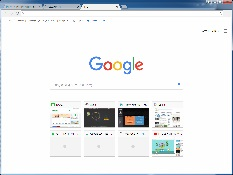

웹브라우저 소개
브라우우저 라고 불리기도 하는 웹브라우저는 웹서버 컴퓨터에 접속하고 웹페이지 이미지 동영상 음악 등 다양한 데이터를 다운받아 보여누는 소프트웨어이다. 그림 1-2는 대표적인 브라우저 chrome을 보여준다.

그림 1-2 구글 chrome
웹페이지는 브라우저에 html임을 알리기 위해 그림 1-3과 같은 코드를 첫라인에 삽입하여야한다.
그림 1-3 html코드